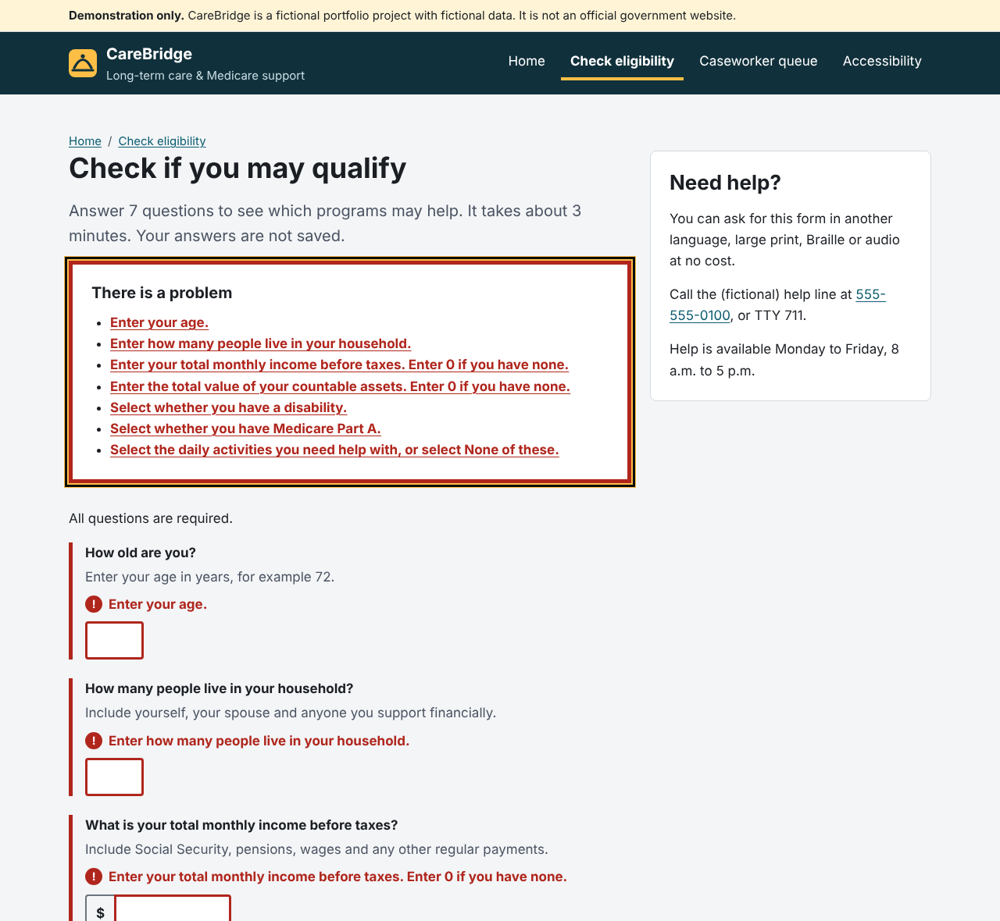
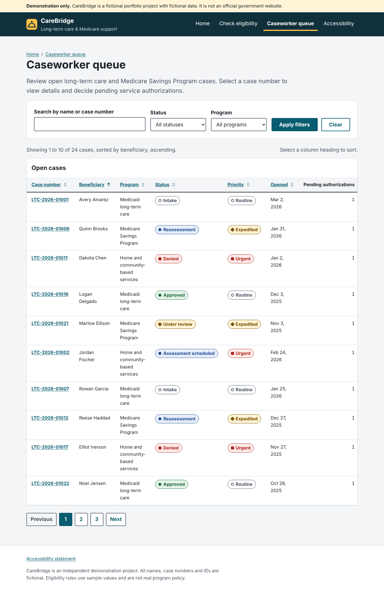
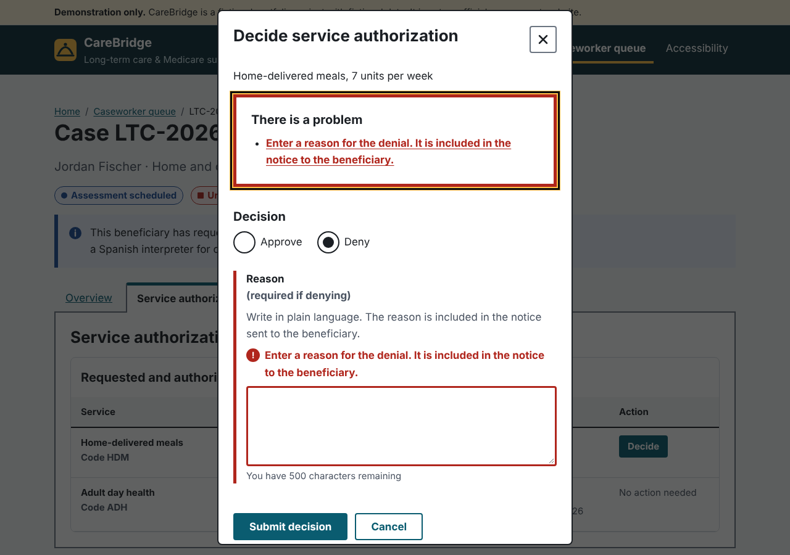
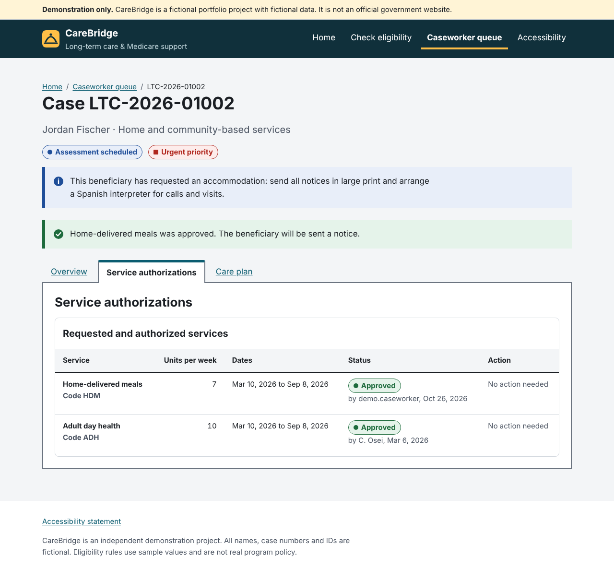
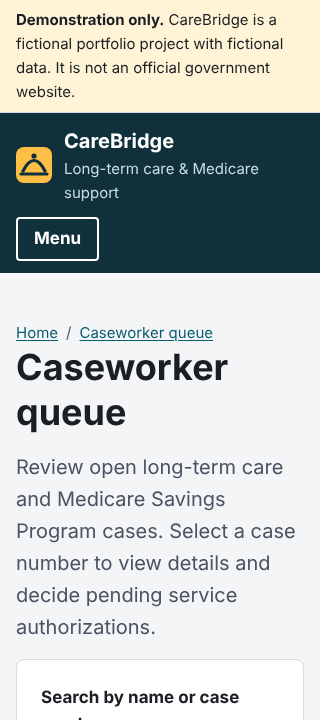
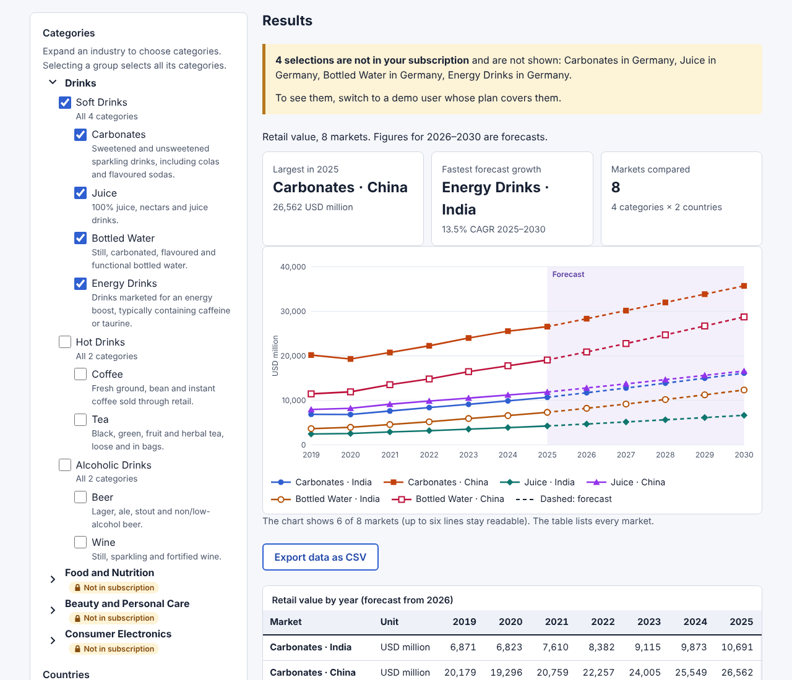
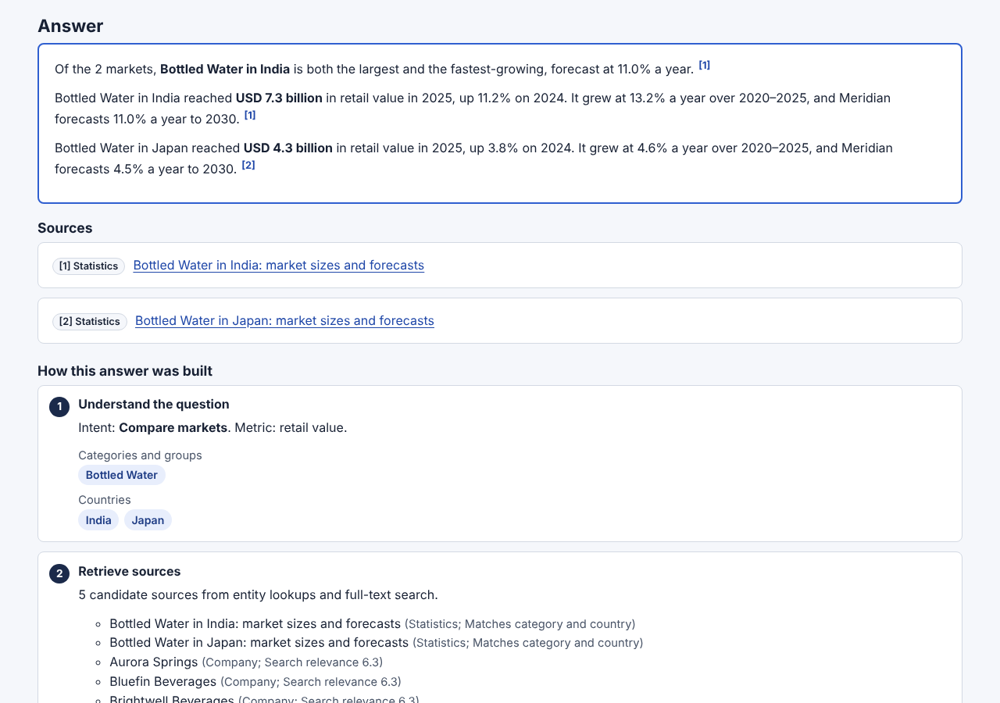
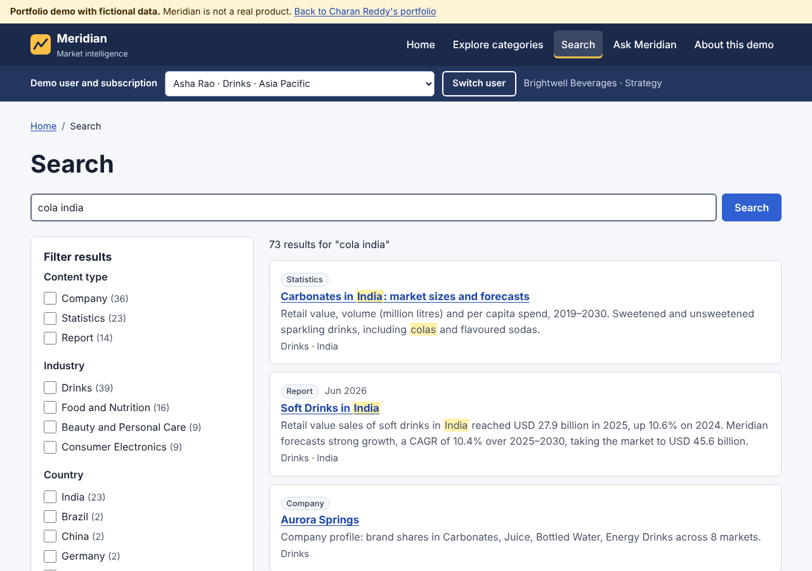
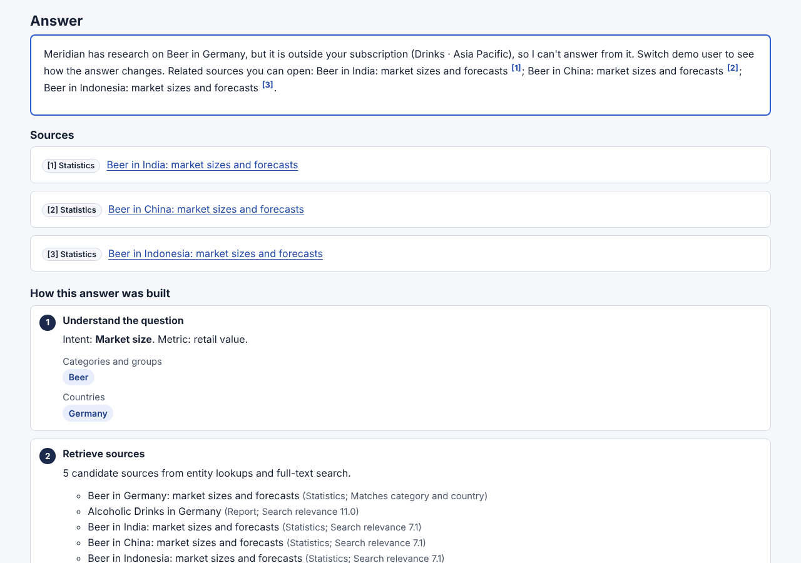

.NET Full Stack Developer · C# · ASP.NET Core MVC · WCAG 2.1 AA
Accessible public-benefits software, from the SQL table to the screen reader.
I'm Charan Reddy. I have 8+ years of C#-first full stack experience: ASP.NET Core MVC and Web API, Entity Framework, SQL Server stored procedures, and JavaScript, jQuery, Bootstrap, Angular and React front ends. I currently work on a Medicaid and Medicare long-term care platform for a city social services agency.
Email: charanreddythambireddy@gmail.com Phone: +1 (835) 263-0332 LinkedIn profile

Qualifications
Mandatory and desirable qualifications, line by line
For the .NET Full Stack Developer contract in Albany, NY. Months are counted from May 2018 to November 2026 (about 102 months), using the dates on my resume.
| Requirement | Asked | Status | My experience |
|---|---|---|---|
| Mandatory | |||
| System integration engineering (Level I) | 3 to 7 years | Meets | Integration work in every role: Kafka and RabbitMQ events between services, APIs across Karnataka state departments, NIC data-center beneficiary data, financial and reporting system integration at DSS, a Stripe payment gateway, and SSIS data synchronization. |
| Full stack developer, C# primary | 72 months | Meets | About 102 months, C# first in all four roles: Blackwater Tech, Karnataka Agricultural Dept, Euromonitor, NYC DSS. |
| ASP.NET Core MVC (not .NET Framework MVC) | 48 months | Meets | ASP.NET Core in all four roles since 2018: MVC web apps at Blackwater Tech and the Karnataka department, then .NET 6/8 services and web apps at Euromonitor and DSS. See the MVC controller and Razor samples. |
| Front end: jQuery, JavaScript, HTML5, Bootstrap, CSS/SCSS/LESS | 48 months | Meets | JavaScript, TypeScript, HTML5, CSS3, SCSS and Bootstrap since 2018, plus Angular Material, Angular and React. jQuery unobtrusive validation and AJAX are shown in the jQuery sample; the CareBridge design system is written in SCSS. |
| Desirable | |||
| SQL queries and stored procedures | 60 months | Meets | About 102 months: schema design, stored procedures, views, indexing and query tuning in every role, plus SSIS and SQL Server Agent jobs. |
| Entity Framework | 36 months | Meets | Entity Framework at Blackwater Tech and Karnataka, ORM tuning at Euromonitor, EF Core at DSS. LINQ, Dapper and ADO.NET where they fit better. |
| .NET Web API | 36 months | Meets | About 102 months: RESTful APIs in every role, API contracts and versioning, OAuth 2.0 / OIDC with Azure AD. See the documented API sample. |
| Writing and running unit tests | 36 months | Meets | xUnit and NUnit for .NET, Karma for front ends, Swagger and Postman for APIs, SonarQube/SonarCloud quality gates. See the xUnit sample. |
| Git for code management | 24 months | Meets | Git with Azure DevOps and GitHub (GitHub Actions), and TFS earlier. Branching, pull requests and code reviews are part of every sprint. |
Featured project
CareBridge: long-term care and Medicare support portal
An independent sample built for this application. The public side is a plain-language eligibility screener for Medicaid long-term care, home and community-based services, and the Medicare Savings Program. The staff side is a caseworker queue and a case page for approving or denying service authorizations. All data is fictional.
Try it yourself: three tasks, about five minutes
Each task opens a page of the live demo.
-
Make a mistake on the form
- Select Check eligibility without answering.
- Focus jumps to the error summary and the page title starts with "Error:".
- Select an error link: focus goes to that field, with its label in view.
-
Work the queue by keyboard
- Press Tab to a column heading and Enter to sort it.
- A screen reader hears the column state through
aria-sortand the new result count. - Filters apply only when you press Apply filters.
-
Decide a service authorization
- Use ← → to switch tabs, then choose Decide.
- Choose Deny with no reason to see validation inside the dialog.
- Esc returns focus to the button that opened it.




Accessibility evidence
Tested with tools, keyboard and assistive-technology patterns
The project targets WCAG 2.1 AA and Section 508. Automated checks run in the CI pipeline and fail the build on any violation. The full criteria mapping and manual JAWS/NVDA test script are in the repository's ACCESSIBILITY.md.
Automated results
- 0 axe-core violations across 13 page states, including form errors, the open dialog and a 320px viewport.
- 12 of 12 Playwright tests passing: skip links, focus order, tabs, the dialog, live-region announcements and reflow.
- Every color token contrast-checked. The lowest text pairing is 5.7:1.
Selected success criteria
- 1.4.10Reflow at 320px
- 2.4.3Focus order in forms and dialogs
- 2.4.7Two-tone visible focus ring
- 3.3.1Error summary plus inline errors
- 4.1.2ARIA tabs and aria-sort
- 4.1.3Live-region status messages
| Use | Sample | Colors | Ratio | Level |
|---|---|---|---|---|
| Body text | Aa | #1b1f24 on #ffffff | 16.6:1 | AAA |
| Primary / links | Aa | #0a5c70 on #ffffff | 7.6:1 | AAA |
| Muted text | Aa | #4a5361 on #f3f5f7 | 7.1:1 | AAA |
| Error | Aa | #b0261d on #fdeceb | 5.9:1 | AA |
| Success | Aa | #1d6b3c on #e5f3ea | 5.7:1 | AA |
| Warning | Aa | #7a4f00 on #fff4d6 | 6.5:1 | AA |
| Header text | Aa | #ffffff on #10303b | 13.9:1 | AAA |
| Input border | Aa | #6b7480 on #ffffff | 4.7:1 | AA, 3:1 for UI |
Code samples
Excerpts from the repository
These are unedited extracts. The full solution has an ASP.NET Core 8 API, EF Core, xUnit and WebApplicationFactory tests, a Sass design system, SQL Server scripts, and GitHub Actions and Azure DevOps pipelines. Browse all of it on GitHub.
public async Task<DecisionOutcome> DecideAuthorizationAsync(
int caseId, int authorizationId, AuthorizationDecisionRequest request, CancellationToken ct)
{
var auth = await _db.ServiceAuthorizations
.SingleOrDefaultAsync(a => a.Id == authorizationId && a.CaseRecordId == caseId, ct);
if (auth is null)
{
return new DecisionOutcome(DecisionResultKind.NotFound);
}
if (auth.Status != AuthorizationStatus.Pending)
{
return new DecisionOutcome(DecisionResultKind.AlreadyDecided, ToDto(auth));
}
auth.Status = request.Decision!.Value;
auth.DecisionReason = string.IsNullOrWhiteSpace(request.Reason) ? null : request.Reason.Trim();
auth.DecidedBy = _user.UserName;
auth.DecidedUtc = _clock.GetUtcNow().UtcDateTime;
// Never write PII into audit details; reference records by ID only.
_audit.Record(
action: $"Authorization{auth.Status}",
entityType: nameof(ServiceAuthorization),
entityId: auth.Id.ToString(System.Globalization.CultureInfo.InvariantCulture),
details: $"Case {caseId}; service {auth.ServiceCode}");
await _db.SaveChangesAsync(ct);
return new DecisionOutcome(DecisionResultKind.Success, ToDto(auth));
}export function showErrors(form, summary, errors) {
clearErrors(form, summary);
if (!errors.length) {
return;
}
const list = summary.querySelector("ul");
for (const { field, message } of errors) {
const control = form.querySelector(`#${CSS.escape(field)}`);
if (!control) {
continue;
}
const group = control.closest(".bcn-form-group");
const owner = describedElementFor(control);
const messageEl = group?.querySelector(".bcn-error-message");
group?.classList.add("bcn-form-group--error");
// Mark every control in a radio/checkbox group invalid, not just the first.
const controls = owner.tagName === "FIELDSET" ? owner.querySelectorAll("input") : [control];
controls.forEach((c) => c.setAttribute("aria-invalid", "true"));
if (messageEl) {
messageEl.querySelector("[data-error-text]").textContent = message;
messageEl.hidden = false;
addToken(owner, "aria-describedby", messageEl.id);
}
const item = document.createElement("li");
const link = document.createElement("a");
link.href = `#${field}`;
link.textContent = message;
link.addEventListener("click", (event) => {
// Default anchor behaviour scrolls but does not reliably focus form controls, and it
// hides the label/legend above the input. Focus the control and scroll its label into view.
event.preventDefault();
const label = owner.tagName === "FIELDSET"
? owner.querySelector("legend")
: form.querySelector(`label[for="${CSS.escape(field)}"]`);
(label || control).scrollIntoView({ block: "start" });
control.focus({ preventScroll: true });
});
item.append(link);
list.append(item);
}
if (!document.title.startsWith(ERROR_TITLE_PREFIX)) {
document.title = ERROR_TITLE_PREFIX + document.title;
}
summary.hidden = false;
summary.focus();
}tab.addEventListener("keydown", (event) => {
let next = null;
switch (event.key) {
case "ArrowRight":
next = (index + 1) % tabs.length;
break;
case "ArrowLeft":
next = (index - 1 + tabs.length) % tabs.length;
break;
case "Home":
next = 0;
break;
case "End":
next = tabs.length - 1;
break;
default:
return;
}
event.preventDefault();
select(next);
});// Two-tone focus indicator (WCAG 2.4.7 Focus Visible, 2.4.11/2.4.13 in WCAG 2.2):
// a dark outline plus a yellow halo stays visible on light, dark and brand backgrounds.
@mixin focus-ring {
outline: 3px solid var(--bcn-color-focus-ink);
outline-offset: 2px;
box-shadow: 0 0 0 6px var(--bcn-color-focus);
}
// Hides content visually while keeping it available to screen readers.
@mixin visually-hidden {
position: absolute !important;
width: 1px !important;
height: 1px !important;
margin: -1px !important;
padding: 0 !important;
overflow: hidden !important;
clip: rect(0 0 0 0) !important;
clip-path: inset(50%) !important;
white-space: nowrap !important;
border: 0 !important;
}CREATE OR ALTER PROCEDURE dbo.usp_DecideServiceAuthorization
@CaseRecordId INT,
@AuthorizationId INT,
@Decision NVARCHAR(20),
@Reason NVARCHAR(500) = NULL,
@Actor NVARCHAR(120),
@CorrelationId NVARCHAR(64) = NULL
AS
BEGIN
SET NOCOUNT ON;
SET XACT_ABORT ON;
IF @Decision NOT IN (N'Approved', N'Denied')
THROW 50001, N'Decision must be Approved or Denied.', 1;
IF @Decision = N'Denied' AND NULLIF(LTRIM(RTRIM(@Reason)), N'') IS NULL
THROW 50002, N'A denial requires a reason.', 1;
BEGIN TRANSACTION;
DECLARE @Current NVARCHAR(20);
SELECT @Current = Status
FROM dbo.ServiceAuthorization WITH (UPDLOCK, HOLDLOCK) -- serialize concurrent decisions
WHERE Id = @AuthorizationId AND CaseRecordId = @CaseRecordId;
IF @Current IS NULL BEGIN ROLLBACK; RETURN 1; END;
IF @Current <> N'Pending' BEGIN ROLLBACK; RETURN 2; END;
UPDATE dbo.ServiceAuthorization
SET Status = @Decision,
DecisionReason = NULLIF(LTRIM(RTRIM(@Reason)), N''),
DecidedBy = @Actor,
DecidedUtc = SYSUTCDATETIME()
WHERE Id = @AuthorizationId;
INSERT dbo.AuditEntry (TimestampUtc, Actor, Action, EntityType, EntityId, Details, CorrelationId)
VALUES (SYSUTCDATETIME(), @Actor, N'Authorization' + @Decision, N'ServiceAuthorization',
CAST(@AuthorizationId AS NVARCHAR(40)), N'Case ' + CAST(@CaseRecordId AS NVARCHAR(20)), @CorrelationId);
COMMIT;
RETURN 0;
END;test("decision dialog manages focus, validates, and returns focus", async ({ page }) => {
await page.goto("/case.html?id=5#tab-authorizations");
const decide = page.getByRole("button", { name: /^Decide on / }).first();
await decide.click();
const dialog = page.getByRole("dialog", { name: "Decide service authorization" });
await expect(dialog).toBeVisible();
await expect(page.locator("#decision-approve")).toBeFocused();
await page.getByLabel("Deny", { exact: true }).check();
await dialog.getByRole("button", { name: "Submit decision" }).click();
await expect(page.locator("#decision-error-summary")).toBeFocused();
await expectNoViolations(page, "decision dialog error state");
await page.keyboard.press("Escape");
await expect(dialog).toBeHidden();
await expect(decide).toBeFocused();
await decide.click();
await page.getByLabel("Approve", { exact: true }).check();
await dialog.getByRole("button", { name: "Submit decision" }).click();
await expect(page.locator("#decision-notice")).toBeFocused();
await expect(page.locator("#decision-notice")).toContainText("was approved");
});ASP.NET Core MVC, jQuery, unit tests and API documentation
Full files are in this site's samples folder on GitHub. The same service-authorization decision, carried through the stack the role asks for: an MVC controller and Razor view styled with Bootstrap, jQuery validation and AJAX, xUnit tests, and a Web API endpoint whose XML comments produce the Swagger documentation.
[Authorize(Roles = "Caseworker,Supervisor")]
[AutoValidateAntiforgeryToken]
public sealed class CasesController : Controller
{
private readonly ICaseService _cases;
public CasesController(ICaseService cases) => _cases = cases;
// GET /Cases?Status=Pending&Program=MLTC&Sort=beneficiary&Page=2
[HttpGet]
public async Task<IActionResult> Index([FromQuery] CaseQueueQuery query, CancellationToken ct)
{
var model = new CaseQueueViewModel(query, await _cases.GetQueueAsync(query, ct));
// The jQuery filter form asks for the table partial only, so results refresh in place.
return Request.Headers.XRequestedWith == "XMLHttpRequest"
? PartialView("_CaseTable", model)
: View(model);
}
[HttpPost("Cases/{caseId:int}/Authorizations/{authorizationId:int}/Decision")]
public async Task<IActionResult> Decide(
int caseId, int authorizationId, DecisionFormModel form, CancellationToken ct)
{
if (!ModelState.IsValid)
{
// Redisplay with server-side errors; the same rules also run client-side.
ViewData["CaseId"] = caseId;
ViewData["AuthorizationId"] = authorizationId;
return View("Details", await _cases.GetDetailsAsync(caseId, form, ct));
}
var outcome = await _cases.DecideAuthorizationAsync(caseId, authorizationId, form.ToRequest(), ct);
switch (outcome.Kind)
{
case DecisionResultKind.NotFound:
return NotFound();
case DecisionResultKind.AlreadyDecided:
TempData["Notice"] = "Another reviewer already decided this authorization.";
break;
default:
TempData["Notice"] = $"{outcome.Authorization!.ServiceName} was {outcome.Authorization.Status.ToString().ToLowerInvariant()}.";
break;
}
// Post/Redirect/Get: a browser refresh never re-submits the decision.
return RedirectToAction(nameof(Details), new { id = caseId });
}
}public sealed class DecisionFormModel : IValidatableObject
{
[Required(ErrorMessage = "Select approve or deny.")]
public AuthorizationStatus? Decision { get; set; }
[Display(Name = "Reason")]
[StringLength(500, ErrorMessage = "The reason must be 500 characters or fewer.")]
public string? Reason { get; set; }
// Cross-field rule. jQuery mirrors it client-side through the "requiredif" adapter.
public IEnumerable<ValidationResult> Validate(ValidationContext context)
{
if (Decision == AuthorizationStatus.Denied && string.IsNullOrWhiteSpace(Reason))
{
yield return new ValidationResult(
"Enter a reason for the denial. It is included in the notice to the beneficiary.",
new[] { nameof(Reason) });
}
}
public AuthorizationDecisionRequest ToRequest() => new()
{
Decision = Decision,
Reason = Reason
};
}@model DecisionFormModel
@{
var caseId = (int)ViewData["CaseId"]!;
var authorizationId = (int)ViewData["AuthorizationId"]!;
}
@* The form tag helper adds the antiforgery token; tag helpers emit data-val-* for jQuery. *@
<form asp-controller="Cases" asp-action="Decide"
asp-route-caseId="@caseId" asp-route-authorizationId="@authorizationId"
method="post" id="decision-form" novalidate>
<div asp-validation-summary="All" id="decision-error-summary"
class="alert alert-danger" role="alert" tabindex="-1"></div>
<fieldset class="mb-3">
<legend class="h5">Decision</legend>
<div class="form-check form-check-inline">
<input asp-for="Decision" type="radio" value="Approved" id="decision-approve" class="form-check-input" />
<label class="form-check-label" for="decision-approve">Approve</label>
</div>
<div class="form-check form-check-inline">
<input asp-for="Decision" type="radio" value="Denied" id="decision-deny" class="form-check-input" />
<label class="form-check-label" for="decision-deny">Deny</label>
</div>
<span asp-validation-for="Decision" class="invalid-feedback d-block"></span>
</fieldset>
<div class="mb-3">
<label asp-for="Reason" class="form-label"></label>
<div id="reason-hint" class="form-text">Required if denying. Write in plain language.</div>
<textarea asp-for="Reason" class="form-control" rows="4" maxlength="500"
aria-describedby="reason-hint reason-count"
data-val-requiredif="Enter a reason for the denial. It is included in the notice to the beneficiary."
data-val-requiredif-dependson="Decision"
data-val-requiredif-value="Denied"></textarea>
<span asp-validation-for="Reason" class="invalid-feedback d-block"></span>
<div id="reason-count" class="form-text">You have 500 characters remaining</div>
</div>
<button type="submit" class="btn btn-primary">Submit decision</button>
<a asp-action="Details" asp-route-id="@caseId" class="btn btn-outline-secondary">Cancel</a>
</form>// wwwroot/js/case-queue.js (jQuery 3.7, jquery.validate and jquery.validate.unobtrusive)
$(function () {
// 1. Client-side mirror of DecisionFormModel.Validate: a reason is required when denying.
$.validator.addMethod("requiredif", function (value, element, params) {
const chosen = $(element).closest("form").find(`input[name="${params.dependsOn}"]:checked`).val();
return chosen !== params.value || $.trim(value).length > 0;
});
$.validator.unobtrusive.adapters.add("requiredif", ["dependson", "value"], function (options) {
options.rules.requiredif = { dependsOn: options.params.dependson, value: options.params.value };
options.messages.requiredif = options.message;
});
const $decision = $("#decision-form");
// Re-check the reason when the decision changes, but only once an error is showing.
$decision.on("change", 'input[name="Decision"]', function () {
const $reason = $decision.find("#Reason");
if ($reason.hasClass("input-validation-error")) {
$reason.valid();
}
});
// Unobtrusive validation fills the summary first; then move focus to it (WCAG 3.3.1).
$decision.on("invalid-form.validate", function () {
setTimeout(() => $("#decision-error-summary").trigger("focus"), 0);
});
$decision.on("input", "#Reason", function () {
$("#reason-count").text(`You have ${500 - this.value.length} characters remaining`);
});
// 2. Queue filters: fetch the table partial with AJAX instead of reloading the page.
$("#queue-filters").on("submit", function (event) {
event.preventDefault();
const $form = $(this);
const $table = $("#case-table").attr("aria-busy", "true");
const query = $form.serialize();
$.ajax({ url: $form.attr("action"), data: query, cache: false })
.done(function (html) {
$table.html(html);
history.replaceState(null, "", `${$form.attr("action")}?${query}`);
// Polite live region: "Showing 1 to 10 of 24 cases, sorted by beneficiary."
$("#queue-status").text($table.find("[data-result-summary]").text());
})
.fail(function () {
$("#queue-status").text("Cases could not be loaded. Try again.");
})
.always(function () {
$table.attr("aria-busy", "false");
});
});
});public sealed class CaseServiceTests
{
private readonly CareBridgeDbContext _db = new(
new DbContextOptionsBuilder<CareBridgeDbContext>()
.UseInMemoryDatabase(Guid.NewGuid().ToString())
.Options);
private readonly FakeAuditLog _audit = new();
private CaseService CreateSut() => new(
_db,
_audit,
new FakeCurrentUser("demo.caseworker"),
new FakeTimeProvider(new DateTimeOffset(2026, 3, 10, 14, 0, 0, TimeSpan.Zero)));
private async Task SeedPendingAsync(AuthorizationStatus status = AuthorizationStatus.Pending)
{
_db.ServiceAuthorizations.Add(new ServiceAuthorization
{
Id = 7, CaseRecordId = 2, ServiceCode = "HDM", Status = status
});
await _db.SaveChangesAsync();
}
[Fact]
public async Task Deny_records_trimmed_reason_reviewer_and_audit_entry()
{
await SeedPendingAsync();
var outcome = await CreateSut().DecideAuthorizationAsync(2, 7,
new AuthorizationDecisionRequest
{
Decision = AuthorizationStatus.Denied,
Reason = " Needs are met by adult day health. "
},
CancellationToken.None);
Assert.Equal(DecisionResultKind.Success, outcome.Kind);
var saved = await _db.ServiceAuthorizations.SingleAsync(a => a.Id == 7);
Assert.Equal(AuthorizationStatus.Denied, saved.Status);
Assert.Equal("Needs are met by adult day health.", saved.DecisionReason);
Assert.Equal("demo.caseworker", saved.DecidedBy);
var entry = Assert.Single(_audit.Entries);
Assert.Equal("AuthorizationDenied", entry.Action);
Assert.Equal("Case 2; service HDM", entry.Details); // IDs only, never PII
}
[Theory]
[InlineData(AuthorizationStatus.Approved)]
[InlineData(AuthorizationStatus.Denied)]
public async Task Already_decided_authorization_is_left_unchanged(AuthorizationStatus existing)
{
await SeedPendingAsync(existing);
var outcome = await CreateSut().DecideAuthorizationAsync(2, 7,
new AuthorizationDecisionRequest { Decision = AuthorizationStatus.Approved },
CancellationToken.None);
Assert.Equal(DecisionResultKind.AlreadyDecided, outcome.Kind);
Assert.Empty(_audit.Entries);
}
[Fact]
public async Task Authorization_on_a_different_case_is_not_found()
{
await SeedPendingAsync();
var outcome = await CreateSut().DecideAuthorizationAsync(99, 7,
new AuthorizationDecisionRequest { Decision = AuthorizationStatus.Approved },
CancellationToken.None);
Assert.Equal(DecisionResultKind.NotFound, outcome.Kind);
}
[Fact]
public void Denial_without_a_reason_fails_model_validation()
{
var form = new DecisionFormModel { Decision = AuthorizationStatus.Denied, Reason = " " };
var results = new List<ValidationResult>();
var valid = Validator.TryValidateObject(form, new ValidationContext(form), results, validateAllProperties: true);
Assert.False(valid);
Assert.Contains(results, r => r.MemberNames.Contains(nameof(DecisionFormModel.Reason)));
}
}// Program.cs: XML comments feed the Swagger UI and the published OpenAPI spec.
builder.Services.AddSwaggerGen(options =>
{
options.SwaggerDoc("v1", new OpenApiInfo { Title = "CareBridge API", Version = "v1" });
options.IncludeXmlComments(
Path.Combine(AppContext.BaseDirectory, $"{typeof(Program).Assembly.GetName().Name}.xml"));
});
// Controllers/Api/AuthorizationsController.cs
[ApiController]
[Route("api/v1/cases")]
[Produces("application/json")]
public sealed class AuthorizationsController(ICaseService cases) : ControllerBase
{
/// <summary>Records an approve or deny decision on a pending service authorization.</summary>
/// <param name="caseId">Case record ID.</param>
/// <param name="authorizationId">Service authorization ID on that case.</param>
/// <param name="request">The decision, plus a plain-language reason when denying.</param>
/// <param name="ct">Request cancellation.</param>
/// <response code="200">Decision recorded; returns the updated authorization.</response>
/// <response code="400">Validation failed, for example a denial without a reason.</response>
/// <response code="404">No such authorization on this case.</response>
/// <response code="409">Another reviewer already decided this authorization.</response>
[HttpPost("{caseId:int}/authorizations/{authorizationId:int}/decision")]
[Authorize(Policy = "CanDecideAuthorizations")]
[ProducesResponseType<ServiceAuthorizationDto>(StatusCodes.Status200OK)]
[ProducesResponseType<ValidationProblemDetails>(StatusCodes.Status400BadRequest)]
[ProducesResponseType(StatusCodes.Status404NotFound)]
[ProducesResponseType<ProblemDetails>(StatusCodes.Status409Conflict)]
public async Task<IActionResult> Decide(
int caseId, int authorizationId, AuthorizationDecisionRequest request, CancellationToken ct)
{
var outcome = await cases.DecideAuthorizationAsync(caseId, authorizationId, request, ct);
return outcome.Kind switch
{
DecisionResultKind.Success => Ok(outcome.Authorization),
DecisionResultKind.NotFound => NotFound(),
DecisionResultKind.AlreadyDecided => Problem(
statusCode: StatusCodes.Status409Conflict,
title: "Authorization already decided"),
_ => throw new UnreachableException()
};
}
}Featured project 2
Meridian: a subscription market-intelligence platform
A sample built on the kind of platform I worked on at Euromonitor International (2021–2025): a research taxonomy, market sizes with forecasts to 2030, analyst reports, full-text search, a source-cited assistant, and access control by subscription. It is the data-heavy counterpart to CareBridge's forms and workflows.
Meridian is an independent sample. It contains no Euromonitor code, data or design, and every company, figure and report in it is fictional.
Try it yourself: three tasks
-
Compare markets and see access control
- Select Soft Drinks, then India, China and Germany.
- India and China chart side by side with forecasts; Germany is withheld because Asha's plan covers Drinks in Asia Pacific only.
- Export the visible data as CSV.
-
Switch subscription
- In the bar at the top, switch to Mei Lin · Global.
- Germany now appears, the tree's locks disappear, and search results unlock.
-
Ask a question with citations
- Ask Which company leads energy drinks in Indonesia?
- See how the answer was built: entities found, sources retrieved, sources removed by entitlement, and citations.
Architecture
The production design the demo stands in for. The demo itself runs in the browser, so it can be hosted as a static site.
Front end
- Angular micro-UIsExplore, search, reports, Ask, export
- StateRxJS / NgRx, lazy-loaded modules
HTTPS + Azure AD bearer token (OAuth 2.0 / OIDC)
ASP.NET Core 8 APIs
- Market dataSeries, shares, CAGR
- ReportsAnalyst research
- SearchFull text + filters
- AskRetrieval + LLM with citations
- ExportCSV / Excel
EF Core, Dapper, cache-aside
Data
- SQL ServerTime series, taxonomy, columnstore
- RedisQuery results, plans
- Cosmos DBReport metadata
- Search indexReports and datasets




Meridian code samples
Backend and front-end code for the production design. Full files are in the samples/meridian folder on GitHub.
// Meridian.Api/Controllers/MarketDataController.cs
[ApiController]
[Route("api/v1/market-data")]
[Authorize] // Azure AD bearer token (OAuth 2.0 / OIDC)
public sealed class MarketDataController(
IMarketDataService marketData,
IAuthorizationService authorization) : ControllerBase
{
/// <summary>Returns yearly series for every category × country pair the caller is entitled to.</summary>
/// <response code="200">Series for entitled pairs, plus the pairs that were withheld.</response>
/// <response code="400">Unknown category, country or metric, or an invalid year range.</response>
[HttpPost("series")]
[ProducesResponseType<SeriesResponse>(StatusCodes.Status200OK)]
[ProducesResponseType<ValidationProblemDetails>(StatusCodes.Status400BadRequest)]
public async Task<IActionResult> GetSeries(SeriesRequest request, CancellationToken ct)
{
var allowed = new List<MarketKey>();
var withheld = new List<MarketKey>();
foreach (var key in request.Markets())
{
// Resource-based check: the plan must cover the category's industry AND the country.
var result = await authorization.AuthorizeAsync(User, key, Policies.CanReadMarket);
(result.Succeeded ? allowed : withheld).Add(key);
}
var series = allowed.Count == 0
? []
: await marketData.GetSeriesAsync(allowed, request.Metric, request.FromYear, request.ToYear, ct);
// Withheld pairs are named so the UI can explain them; their data never leaves the API.
return Ok(new SeriesResponse(series, withheld));
}
}
public sealed record SeriesRequest(
[property: Required, MinLength(1), MaxLength(20)] IReadOnlyList<string> Categories,
[property: Required, MinLength(1), MaxLength(20)] IReadOnlyList<string> Countries,
[property: Required] Metric Metric,
[property: Range(2019, 2030)] int FromYear = 2019,
[property: Range(2019, 2030)] int ToYear = 2030) : IValidatableObject
{
public IEnumerable<MarketKey> Markets() =>
Categories.Distinct().SelectMany(c => Countries.Distinct().Select(g => new MarketKey(c, g)));
public IEnumerable<ValidationResult> Validate(ValidationContext context)
{
if (FromYear > ToYear)
yield return new ValidationResult("FromYear must not be after ToYear.", [nameof(FromYear)]);
}
}// Meridian.Api/Authorization/MarketEntitlementHandler.cs
public sealed class MarketEntitlementRequirement : IAuthorizationRequirement;
/// <summary>
/// Authorizes one category × country pair against the caller's organisation subscription.
/// Authentication tells us who the user is; this decides what they may read.
/// </summary>
public sealed class MarketEntitlementHandler(
ISubscriptionStore subscriptions,
ITaxonomy taxonomy,
ILogger<MarketEntitlementHandler> logger)
: AuthorizationHandler<MarketEntitlementRequirement, MarketKey>
{
protected override async Task HandleRequirementAsync(
AuthorizationHandlerContext context, MarketEntitlementRequirement requirement, MarketKey market)
{
var orgId = context.User.FindFirstValue("org_id");
if (orgId is null)
{
return; // no organisation claim: not entitled to anything
}
// Cached per organisation (Redis, 10 minutes) and evicted when a plan changes.
var plan = await subscriptions.GetPlanAsync(orgId);
var industry = taxonomy.IndustryOf(market.CategoryId);
if (plan is not null && industry is not null
&& plan.Industries.Contains(industry)
&& plan.Countries.Contains(market.CountryId))
{
context.Succeed(requirement);
return;
}
logger.LogInformation("Withheld {Category}/{Country} for org {OrgId}", market.CategoryId, market.CountryId, orgId);
}
}
// Program.cs
builder.Services.AddAuthorizationBuilder()
.AddPolicy(Policies.CanReadMarket, p => p.AddRequirements(new MarketEntitlementRequirement()));
builder.Services.AddScoped<IAuthorizationHandler, MarketEntitlementHandler>();// Meridian.Api/Services/MarketDataService.cs
public sealed class MarketDataService(
MeridianDbContext db,
IDistributedCache cache, // Redis
IReleaseVersion release, // bumped by the data-release consumer
ILogger<MarketDataService> logger) : IMarketDataService
{
private static readonly DistributedCacheEntryOptions CacheFor =
new() { AbsoluteExpirationRelativeToNow = TimeSpan.FromHours(6) };
public async Task<IReadOnlyList<MarketSeries>> GetSeriesAsync(
IReadOnlyList<MarketKey> markets, Metric metric, int fromYear, int toYear, CancellationToken ct)
{
// The release number is part of the key, so a new data release never serves stale figures.
var key = $"series:v{await release.CurrentAsync(ct)}:{metric}:{fromYear}-{toYear}:"
+ string.Join(',', markets.OrderBy(m => m.CategoryId).ThenBy(m => m.CountryId).Select(m => $"{m.CategoryId}/{m.CountryId}"));
if (await cache.GetStringAsync(key, ct) is { } hit)
{
return JsonSerializer.Deserialize<List<MarketSeries>>(hit)!;
}
var categoryIds = markets.Select(m => m.CategoryId).Distinct().ToArray();
var countryIds = markets.Select(m => m.CountryId).Distinct().ToArray();
var wanted = markets.ToHashSet();
// One round trip; the covering index on (MetricId, CategoryId, CountryId, Year) serves it.
var rows = await db.MarketValues
.AsNoTracking()
.Where(v => v.Metric == metric
&& categoryIds.Contains(v.CategoryId)
&& countryIds.Contains(v.CountryId)
&& v.Year >= fromYear && v.Year <= toYear)
.Select(v => new { v.CategoryId, v.CountryId, v.Year, v.Value, v.IsForecast, v.Unit })
.ToListAsync(ct);
var series = rows
.Where(r => wanted.Contains(new MarketKey(r.CategoryId, r.CountryId)))
.GroupBy(r => new MarketKey(r.CategoryId, r.CountryId))
.Select(g => new MarketSeries(
g.Key,
g.First().Unit,
g.OrderBy(r => r.Year).Select(r => new YearValue(r.Year, r.Value, r.IsForecast)).ToList()))
.ToList();
await cache.SetStringAsync(key, JsonSerializer.Serialize(series), CacheFor, ct);
logger.LogDebug("Loaded {Count} series from SQL for {Key}", series.Count, key);
return series;
}
}-- database/010_market_values.sql
CREATE TABLE dbo.MarketValue
(
CategoryId VARCHAR(40) NOT NULL REFERENCES dbo.Category (CategoryId),
CountryId CHAR(2) NOT NULL REFERENCES dbo.Country (CountryId),
MetricId TINYINT NOT NULL, -- 1 value, 2 volume, 3 per capita
[Year] SMALLINT NOT NULL CHECK ([Year] BETWEEN 1990 AND 2050),
Value DECIMAL(19, 4) NOT NULL,
Unit VARCHAR(30) NOT NULL,
IsForecast BIT NOT NULL,
ReleaseId INT NOT NULL REFERENCES dbo.DataRelease (ReleaseId),
CONSTRAINT PK_MarketValue PRIMARY KEY (MetricId, CategoryId, CountryId, [Year])
);
-- Wide year-range scans for dashboards and exports.
CREATE NONCLUSTERED COLUMNSTORE INDEX NCCI_MarketValue
ON dbo.MarketValue (CategoryId, CountryId, MetricId, [Year], Value, IsForecast);
GO
-- CAGR between two years for every market in a category group, for report generation.
CREATE OR ALTER PROCEDURE dbo.usp_GroupGrowth
@GroupId VARCHAR(40),
@FromYear SMALLINT,
@ToYear SMALLINT
AS
BEGIN
SET NOCOUNT ON;
IF @ToYear <= @FromYear
THROW 50010, N'ToYear must be after FromYear.', 1;
WITH Endpoints AS
(
SELECT v.CategoryId, v.CountryId,
StartValue = MAX(CASE WHEN v.[Year] = @FromYear THEN v.Value END),
EndValue = MAX(CASE WHEN v.[Year] = @ToYear THEN v.Value END)
FROM dbo.MarketValue AS v
JOIN dbo.Category AS c ON c.CategoryId = v.CategoryId
WHERE c.GroupId = @GroupId
AND v.MetricId = 1
AND v.[Year] IN (@FromYear, @ToYear)
GROUP BY v.CategoryId, v.CountryId
)
SELECT CategoryId, CountryId, StartValue, EndValue,
Cagr = POWER(EndValue / NULLIF(StartValue, 0), 1.0 / (@ToYear - @FromYear)) - 1
FROM Endpoints
WHERE StartValue IS NOT NULL AND EndValue IS NOT NULL
ORDER BY Cagr DESC;
END;// Meridian.Indexer/DataReleaseConsumer.cs
/// <summary>
/// Listens for "data release published" events. Each release bumps the cache version
/// (old cached series stop being read) and re-indexes the affected reports for search.
/// </summary>
public sealed class DataReleaseConsumer(
IConsumer<string, DataReleasePublished> consumer,
IReleaseVersion release,
ISearchIndexer indexer,
ILogger<DataReleaseConsumer> logger) : BackgroundService
{
protected override async Task ExecuteAsync(CancellationToken stoppingToken)
{
consumer.Subscribe("meridian.data-releases");
while (!stoppingToken.IsCancellationRequested)
{
ConsumeResult<string, DataReleasePublished>? result = null;
try
{
result = consumer.Consume(stoppingToken);
var evt = result.Message.Value;
await release.SetAsync(evt.ReleaseId, stoppingToken);
await indexer.ReindexAsync(evt.CategoryIds, evt.CountryIds, stoppingToken);
// Commit only after the work succeeded: at-least-once, and reindexing is idempotent.
consumer.Commit(result);
logger.LogInformation("Applied release {ReleaseId} ({Count} categories)", evt.ReleaseId, evt.CategoryIds.Count);
}
catch (OperationCanceledException) when (stoppingToken.IsCancellationRequested)
{
break;
}
catch (Exception ex)
{
// Leave the offset uncommitted so the event is retried; back off briefly.
logger.LogError(ex, "Failed to apply release at offset {Offset}", result?.TopicPartitionOffset);
await Task.Delay(TimeSpan.FromSeconds(5), stoppingToken);
}
}
consumer.Close();
}
}// Meridian.Api/Controllers/AskController.cs
[ApiController]
[Route("api/v1/ask")]
[Authorize]
public sealed class AskController(
IQuestionParser parser,
IResearchRetriever retriever,
IAuthorizationService authorization,
IChatCompletionClient llm) : ControllerBase
{
private const string SystemPrompt =
"You are a market research assistant. Answer ONLY from the numbered sources provided. " +
"Cite every figure as [n]. If the sources do not answer the question, say so. Never estimate numbers.";
[HttpPost]
[EnableRateLimiting("ask")] // per-user token bucket
public async Task<ActionResult<AskResponse>> Ask(AskRequest request, CancellationToken ct)
{
var intent = parser.Parse(request.Question); // categories, countries, companies, metric
var candidates = await retriever.RetrieveAsync(intent, request.Question, top: 8, ct);
// Entitlement filter BEFORE anything reaches the model.
var sources = new List<RetrievedSource>();
var withheld = 0;
foreach (var source in candidates)
{
var ok = source.Market is null
|| (await authorization.AuthorizeAsync(User, source.Market, Policies.CanReadMarket)).Succeeded;
if (ok) sources.Add(source); else withheld++;
}
if (sources.Count == 0)
{
return Ok(AskResponse.NoAccessibleSources(withheld));
}
var context = string.Join("\n\n", sources.Select((s, i) => $"[{i + 1}] {s.Title}\n{s.Passage}"));
var completion = await llm.CompleteAsync(SystemPrompt, $"Sources:\n{context}\n\nQuestion: {request.Question}", ct);
return Ok(new AskResponse(
Answer: completion.Text,
Sources: sources.Select((s, i) => new SourceRef(i + 1, s.Title, s.Url)).ToList(),
WithheldSourceCount: withheld));
}
}// meridian-web/src/app/explore/market-data.service.ts
@Injectable({ providedIn: 'root' })
export class MarketDataService {
private readonly http = inject(HttpClient);
getSeries(request: SeriesRequest): Observable<SeriesResponse> {
return this.http.post<SeriesResponse>('/api/v1/market-data/series', request).pipe(
retry({ count: 2, delay: (_, attempt) => timer(attempt * 500) }), // transient failures only
);
}
}
// explore.component.ts (excerpt): only the latest selection's response is rendered.
export class ExploreComponent {
private readonly data = inject(MarketDataService);
private readonly announcer = inject(LiveAnnouncer);
readonly selection = new Subject<SeriesRequest>();
readonly vm$ = this.selection.pipe(
debounceTime(150),
distinctUntilChanged((a, b) => JSON.stringify(a) === JSON.stringify(b)),
switchMap((request) =>
this.data.getSeries(request).pipe(
map((response) => ({ state: 'loaded' as const, response })),
startWith({ state: 'loading' as const }),
catchError(() => of({ state: 'error' as const })),
),
),
tap((vm) => {
if (vm.state === 'loaded') {
const n = vm.response.series.length;
const withheld = vm.response.withheld.length;
this.announcer.announce(`Showing ${n} markets${withheld ? `, ${withheld} not in your subscription` : ''}.`);
}
}),
shareReplay({ bufferSize: 1, refCount: true }),
);
}// tests/Meridian.Api.Tests/MarketEntitlementHandlerTests.cs
public sealed class MarketEntitlementHandlerTests
{
private static readonly SubscriptionPlan DrinksApac = new(
Industries: ["drinks"], Countries: ["IN", "CN", "ID", "JP"]);
private static async Task<bool> IsAllowed(MarketKey market, SubscriptionPlan? plan, string? orgId = "org-1")
{
var subscriptions = Substitute.For<ISubscriptionStore>();
subscriptions.GetPlanAsync("org-1").Returns(plan);
var taxonomy = Substitute.For<ITaxonomy>();
taxonomy.IndustryOf("tea").Returns("drinks");
taxonomy.IndustryOf("skin-care").Returns("beauty");
var claims = orgId is null ? Array.Empty<Claim>() : [new Claim("org_id", orgId)];
var user = new ClaimsPrincipal(new ClaimsIdentity(claims, "test"));
var requirement = new MarketEntitlementRequirement();
var context = new AuthorizationHandlerContext([requirement], user, market);
await new MarketEntitlementHandler(subscriptions, taxonomy, NullLogger<MarketEntitlementHandler>.Instance)
.HandleAsync(context);
return context.HasSucceeded;
}
[Fact]
public async Task Allows_a_market_inside_the_plan() =>
Assert.True(await IsAllowed(new MarketKey("tea", "CN"), DrinksApac));
[Theory]
[InlineData("tea", "DE")] // country outside the plan
[InlineData("skin-care", "IN")] // industry outside the plan
[InlineData("unknown", "IN")] // category not in the taxonomy
public async Task Withholds_a_market_outside_the_plan(string category, string country) =>
Assert.False(await IsAllowed(new MarketKey(category, country), DrinksApac));
[Fact]
public async Task Withholds_everything_without_an_organisation_claim() =>
Assert.False(await IsAllowed(new MarketKey("tea", "CN"), DrinksApac, orgId: null));
[Fact]
public async Task Withholds_everything_when_the_organisation_has_no_plan() =>
Assert.False(await IsAllowed(new MarketKey("tea", "CN"), plan: null));
}Role fit
The role's duties, matched to work I have done
Each group follows the five sections of the position summary, with examples from my resume.
1 · Understanding and planning
Requirement analysis, design and code review
- Ran requirements sessions with NYC DSS program teams and turned Medicaid and Medicare policy into workflows for intake, assessment, review and service authorization.
- Gathered requirements from Karnataka government stakeholders and absorbed urgent scope changes from state directives under tight deadlines.
- Defined API contracts and service boundaries at Euromonitor; did feasibility analysis with clients and code reviews in every sprint at Blackwater Tech.
2 · Development and implementation
Features in C#, front ends, Web APIs and database scripts
- Business logic and reusable components in C#, LINQ and Entity Framework, plus reusable Angular and React components, hooks and dynamic forms.
- Front ends built to design guidelines: Bootstrap and Angular Material layouts, an SCSS design system, and WCAG 2.1 AA accessibility.
- ASP.NET Core Web APIs and .NET 6/8 microservices, including legacy upgrades that kept backward compatibility.
- SQL Server schemas, stored procedures, views and reporting queries for high-volume transactional and reporting work.
3 · Quality assurance and optimization
Unit tests, debugging and performance
- Unit tests with xUnit, NUnit and Karma; API checks with Swagger and Postman before government releases; SonarQube quality gates.
- Production support: monitoring with Application Insights, Grafana and Serilog, incident diagnosis and root cause analysis.
- Performance: SQL query tuning and indexing for large analytical queries, Redis caching and rate limiting, lazy loading and code splitting in the UI.
4 · Mentorship and knowledge sharing
Code reviews, standards and technical documentation
- Code reviews and shared engineering standards: SOLID, layered architecture, API versioning, and reusable component libraries other developers build on.
- Technical documentation: API specifications through Swagger/OpenAPI and XML comments, design notes, and the accessibility guide and test script in the CareBridge repository.
- Ad-hoc reports and data sheets that let senior officials and ministers answer questions in the legislative assembly.
5 · Communication and collaboration
Clear communication, independent ownership
- Work daily with business analysts, QA, product, UX, vendors and program managers in Agile/Scrum teams.
- Took sole ownership of backend services, CI/CD release pipelines and production readiness at Euromonitor.
- Coordinated with the NIC data center and several state departments to get access to beneficiary data and APIs.
Technical skills
Tools and technologies
Backend (.NET)
- C#
- .NET Framework
- .NET Core / .NET 6 and 8
- ASP.NET Core MVC
- Web API
- RESTful APIs
- Middleware
- Blazor
- Python
- RabbitMQ
- Kafka
Frontend (UI)
- JavaScript
- jQuery
- TypeScript
- HTML5
- CSS3
- SCSS
- Bootstrap
- Angular Material
- Angular (v12+)
- React
- responsive and component-based UI
- WCAG 2.1 AA
Database and data access
- SQL Server
- stored procedures
- performance tuning
- Entity Framework / EF Core
- LINQ
- Dapper
- ADO.NET
- SSIS
- Azure SQL
- Cosmos DB
- Redis
Architecture
- SOLID principles
- design patterns
- MVC and MVVM
- microservices
- micro-frontends
- API versioning
Testing and quality
- xUnit
- NUnit
- Karma
- Playwright
- Swagger
- Postman
- SonarQube
- SonarCloud
- axe-core
Azure cloud
- App Services
- Functions
- Storage
- Key Vault
- Azure AD (OAuth 2.0 / OIDC)
- Managed Identities
- Kubernetes
DevOps and source control
- Git
- Azure DevOps
- GitHub Actions
- TFS
- CI/CD pipelines
- Docker
- environment-based deployments
Monitoring
- Azure Application Insights
- Grafana
- Serilog
- distributed tracing
- health checks
Experience
Recent roles
-
Senior Consultant · Department of Social Services, New York City
Dec 2025 – present
- Long-Term Care platform supporting Medicaid and Medicare service programs: enrollment, eligibility, case management and service authorization.
- Accessible React and Angular interfaces, with WCAG 2.1 AA remediation verified by automated checks and keyboard testing.
- .NET 6/8 microservices, Azure AD role-based access, Kafka/RabbitMQ events, SQL Server reporting, Azure DevOps CI/CD.
- Multi-level review, approval and reassessment workflows, audit logging and compliance controls for government data governance.
- SQL Server stored procedures and views, SSIS packages and SQL Server Agent jobs, and Cosmos DB for assessment and audit data.
- Production monitoring, incident investigation and root cause analysis; requirements sessions with DSS program teams.
-
Software Engineer · Euromonitor International
Dec 2021 – Nov 2025
- Modernized ASP.NET Core services to .NET 6/8 and built Angular and React micro-UIs for enterprise analytics dashboards.
- Tested with axe DevTools and JAWS, and remediated keyboard, focus-management and screen-reader issues to WCAG 2.1 AA.
- SQL Server query tuning, indexing and efficient ORM use for large analytical queries; Cosmos DB and Redis where they fit.
- Owned API contracts, OAuth 2.0 / OIDC sign-in with Azure AD, and the Azure DevOps CI/CD release pipelines across services.
- See Meridian, a sample project built on the kind of platform I worked on here.
-
.NET Developer · Karnataka State Agricultural Department
Apr 2021 – Nov 2021
- Statewide schemes application using .NET Core, React and SQL Server, including beneficiary eligibility filtering across department APIs.
- ASP.NET Core MVC and Web API modules for irrigation, pesticides, fertilizers and farm mechanization, with Entity Framework and tuned stored procedures.
- Unit tests with xUnit and Karma, API validation with Swagger and Postman, and Azure DevOps pipelines with strict release approvals.
- Maintained WPF desktop apps (C#, XAML, MVVM) and prepared real-time scheme reports for senior officials and ministers.
-
Software Developer · Blackwater Tech
May 2018 – Apr 2021
- ASP.NET MVC and Core applications with Angular Material and Bootstrap front ends.
- Business logic in C#, LINQ and Entity Framework over SQL Server; RESTful APIs for front ends and client systems.
- Built an Employee Management System later adopted as the internal HR platform, and integrated Stripe payments.
- Sprint planning, code reviews and releases in Agile Scrum; Azure DevOps CI/CD automation.
Certifications and education
- Microsoft Azure Developer (AZ-204)
- Microsoft Azure Fundamentals (AZ-900)
- B.E., Anna University (Panimalar Engineering College)
Resume
Download my resume
The same resume I shared with the recruiter, as a Word document or a PDF.